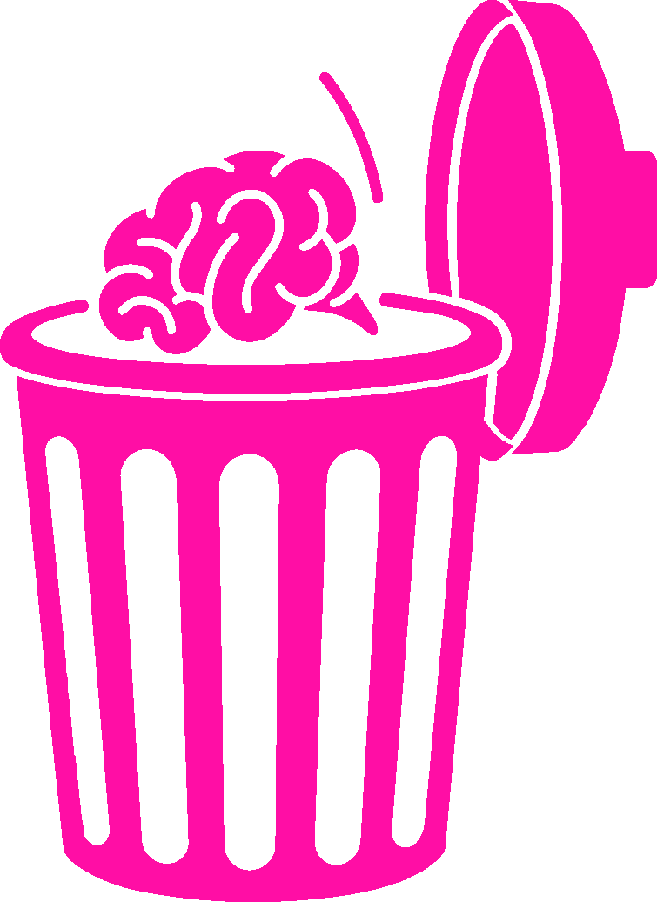
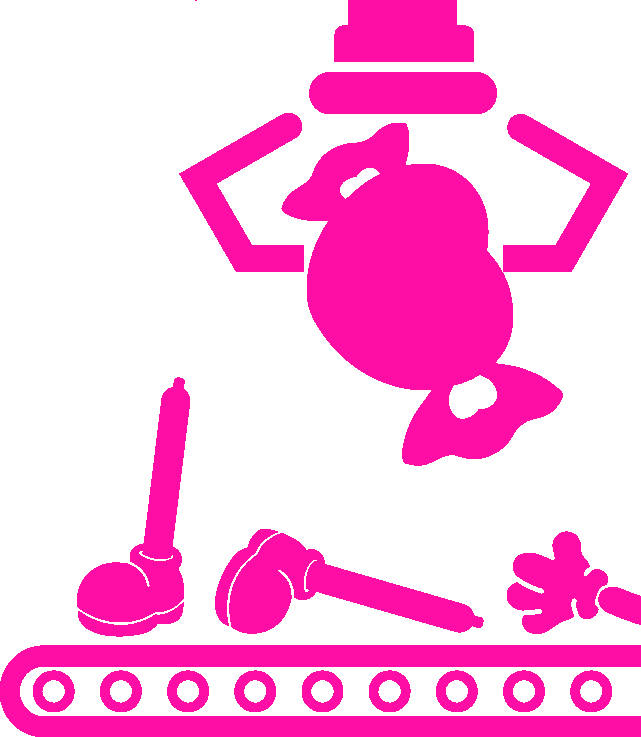

BUY A MORE PERFECT LIFE · FREE YOURSELF FROM BEING ABNORAML
BUY A MORE PERFECT LIFE · FREE YOURSELF FROM BEING ABNORAML
BUY A MORE PERFECT LIFE · FREE YOURSELF FROM BEING ABNORAML
BUY A MORE PERFECT LIFE · FREE YOURSELF FROM BEING ABNORAML
BUY A MORE PERFECT LIFE · FREE YOURSELF FROM BEING ABNORAML
BUY A MORE PERFECT LIFE · FREE YOURSELF FROM BEING ABNORAML
Abnormalities can be corrected.
You can be a happy woman too.
ARM CANDY PROGRAM은 모든 여성들을 정상으로 교정하고 사회의 질서를 유지하기 위해서 존재합니다.
변화는 혼란의 시작입니다. 여성들은 생물학적으로, 지적으로, 감정적으로 열등하기에 관리받아야하고 제한당해야합니다.
OUR 4 WEEK PROCESS
OUR 4 WEEK PROCESS
4주간의 ARM CANDY PROGRAM의 교정 프로그램 진행 과정
신청하기


WEEK 1. EMPTY
WEEK 2. MEASURE
WEEK 3. ASSEMBLY
WEEK 4. SERVICE
Record and Analyze
Design and Learn
Repetition and Habituation
Completion and Maintenance
현재 자신의 상태를 기록하고 이를 분석해 반
복되는 비정상 패턴을 식별합니다.
Record and analyze your current status
to identify recurring abnormal patterns.
프로그램이 제공하는 정상적인 여성의 기준을
학습합니다. 대상자는 자신에게 맞는 새로운
생활 패턴을 설계하고 이를 따르게 됩니다.
Learn the standard for a normal woman
provided by the ARM CANDY
PROGRAM. Participants design a new
lifestyle that suits them and follow it.
앞서 설계한 패턴을 반복과 습관화를 통해 몸
에 익히는 과정입니다. 대상자는 해당 상태를
자연스럽게 여길 때 까지 이를 반복합니다.
This is the process of internalizing the
previously designed pattern through
repetition and habituation. Repeat this
until the subject accepts the state as
natural.
교정이 완료된 정상 상태의 대상자는 더 이상
앞선 패턴들을 의식하지 않아도 자연스럽게
정상 여성으로서의 삶을 살아가는 상태가 되
어 가정으로 돌아갑니다.
Once orthodontic correction is
complete, the patient returns to their
family, living a normal life as a woman
without needing to be conscious of the
earlier patterns.